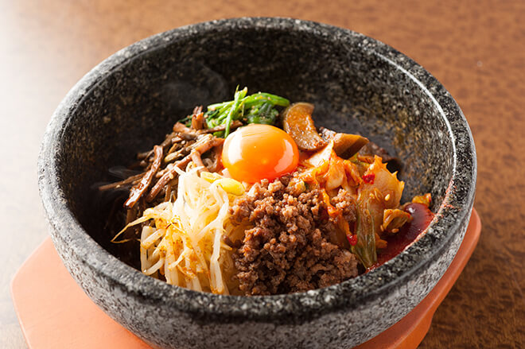

My family had a road trip from Boston to San Diego last summer. We originally wanted to visit Yellowstone National Park for a week. Considering I had a dog that might be left unattended, we decided to drive to Yellowstone National Park. My daughter wanted to go to the San Diego Zoo, so our trip was extended there. On the way, we visited many interesting places, including Yosemite National Park, Antelope Canyon, Death Valley National Park, Zion and Bray National Park. We took one month to complete this trip as a result.
My favorite restaurant is El Tovar Dining Room. Located in the historic El Tovar Hotel in Grand Canyon National Park, this restaurant overlooks the South Rim and offers regional flavors like roasted poblano pepper soup and Colorado rack of lamb.
My favorite food is a Korean dish called Bibimbap. It is made with pre-steamed rice placed in a stone pot, topped with a variety of vegetables, meats, fried eggs, and Korean hot sauce. To eat Bibimbap, you stir all the ingredients thoroughly and enjoy the mix of flavors!
| Book Name | Cover | Author | Summary |
|---|---|---|---|
| Circe | |
Madeline Miller | A powerful retelling of the mythological character Circe, with themes of transformation and self-discovery. |
| The Midnight Library | |
Matt Haig | A novel about the choices we make, with a unique twist on how we live alternate lives through different decisions. |
| Project Hail Mary | |
Andy Weir | A gripping sci-fi adventure where one man's survival holds the key to humanity's future. |
| Klara and the Sun | |
Kazuo Ishiguro | A thought-provoking novel about an artificial friend observing human life and yearning for connection. |